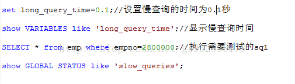

关系型数据库优化操作
目前使用率最多的数据库均为"关系型数据库",例如:oracle,MySql...
1.关系型数据库的瓶颈:
高并发读写需求-----------针对网站类用户的并发性访问非常高,而一台数据库的最大连接数有限,且硬盘I/O有限,其不能满足很多人同时连接
海量数据的高效率读写-------当表中数据量太大,每次的读写速率都将非常缓慢(解决方案:分表.分库)
高扩展性和可用性------一台数据库服务器扩充到多台时,不下电情况很难做到,当服务器挂了,业务都将中断
故而,需要对数据库进行优化!
2.MySql数据库的优化技术
第一步:定位慢查询Sql
1. 先关闭mysql服务—在服务中中止
2. 开启慢查询并把慢查询记录到日志中: 在mysql的安装目录下执行命令: bin\mysqld.exe--safe-mode --slow- query-log
3. 查看mysql安装目录下my.ini文件中datadir(ctrl+f)的路径值所对应的目录下是否有生成有生成当前时间下后缀为.log 的文件,若有,表示成功(新生成的三个文件不能删除)
4. 进行测试: 先设置慢查询时间---->查看慢查询时间--->执行需要测试sql语句--->查看是否有慢查询语句(若有,可以在.log日志文件中查看),如图:
注意:通过 show session/global status(找出) ,其中session是默认值,一般都用global
开发中,测试的时机为:自检/测试功能的时候开启慢查询

慢查询语句: .log中

第二步:分析该Sql效率地的原因
explain(通过 explain 语句可以分析，mysql如何执行你的sql语句)分析,如下图:

第三步:结构设计优化
一.表机构设计
1.范式 3范式规范与反3NF设计,具体视情况而定
备注:三范式指:1.表的列具有原子性,不可再分解;2.建立主键,实现记录唯一性;3.不能出现冗余数据,特殊情况可建立外键
2.选择合适的存储引擎(myisam+INNODB+memory)
当表对事务要求不高,主要是以查询和添加为主的时候,一般用myisam,实例:bbs中的发帖表.回复表
反之对事务要求高,保存的数据都是重要数据的时候,则使用INNODB,例如:订单表.账号表
若数据变化频繁,不需要入库,同时又频繁的查询和修改,一般用memory,速度极快
备注:MyISAM和INNODB的区别:
1.MyISAM不支持事务,INNODB支持
2.MyISAM查询和添加速度较快(底层类似链表,可以采用二叉树查询)
3.MyISAM支持全文索引,INNODB不支持
4.锁机制不同,MyISAM是表锁,INNODB是行锁
5.MyISAM不支持外键,INNODB支持
设置/修改存储引擎语法:
Create table 表名(字段列表) engine存储引擎名称;
例如:Create table employee(id int ,name varchar) engine myisam;
二.索引:索引（Index）是帮助DBMS高效获取数据的数据结构。

|
总结：使用索引把全表查找变为索引查找，减少查询次数，增加效率。而索引查找效率的取决于索引算法。也就是索引（Index）是帮助DBMS高效获取数据的数据结构 |
2.索引的---添加/修改/删除/查询
1):mysql中索引的分类:
普通索引：允许重复的值出现，可以再任何字段上面添加
唯一索引：除了不能有重复的记录外，其它和普通索引一样，可以在值是唯一的字段添加（用户名、手机号码、身份证、email，QQ），可以为null,并且可以有多个null
主键索引：是随着设定主键而创建的，也就是把某个列设为主键的时候，数据库就会給改列创建索引。这就是主键索引.唯一且没有null值
全文索引：用来对表中的文本域(char，varchar，text)进行索引，全文索引针对MyISAM有用
2):添加索引:
普通索引的创建，是先创建表，然后在创建普通索引.
唯一索引:除了不能有重复的记录外，其它和普通索引一样
主键索引：是随着设定主键而创建的，也就是把某个列设为主键的时候，数据库就会給改列创建索引。这就是主键索引.唯一且没有null值
全文索引:用来对表中的文本域(char，varchar，text)进行索引，全文索引针对MyISAM有用,如下图
语法:show INDEX from 表名;
4):删除语法:ALTER TABLE 表名 drop INDEX 索引名;//删除索引
5):修改
流程:先删除后添加=修改
3:索引的代价是:
1).占用磁盘空间
2):对dml(删除/添加/修改)操作有影响,因为要维护索引,效率变低.
4.使用场景:较为频繁的作为查询条件的字段
a.肯定在where条件经常使用
b: 该字段的内容不是唯一的几个值(sex)
c: 字段内容不是频繁变化.
5):总结:普通索引（单列索引）：该索引只在一个列上面创建
复合索引（多列索引）：该索引只在多个列上面创建
6):使用小技巧:
a:对于创建的多列索引（复合索引），不是使用的第一部分就不会使用索引。
b:使用like的适合,若%在前面('%aaa')不会使用索引,反之('aa%'),则会使用索引
c:使用or的适合,必须所有的条件都使用索引此sql才会使用索引
d:如果列类型是字符串，那一定要在条件中将数据使用引号引用起来。否则不使用索引
e:如果mysql估计使用全表扫描要比使用索引快，则不使用索引。
三.分表 :分为 水平分割(行)和垂直分割（列）
1.水平分表
表中数据量巨大时，我们要经常查询。则可以按照合适的策略拆分为多张小表。尽量在单张表中查询，减少扫描次数
2.垂直分表
表记录数并不多，但是字段却很长，表占用空间很大，检索表时需要执行大量I/O，严重降低了性能。这个时候需要把大的字段拆分到另一个表，并且该表与原表是一对一的关系（外键）。 (JOIN)
四.分区:将数据分段划分在多个位置存放，可以是同一块磁盘也可以在不同的机器
MySQL 5.1 中新增了分区(Partition)功能，优势也越来越明显了：
--与单个磁盘或文件系统分区相比，可以存储更多的数据
--很容易删除不用或者过时的数据
一些查询可以得到极大的优化可以并发查询
--涉及到 SUM()/COUNT()等聚合函数时，可以并发进行
--IO吞吐量更大五.sql优化小技巧(批量处理)
1.通过禁用索引来提供导入数据性能 。 这个操作主要针对有数据库的表，追加数据
//去除键 alter table test3 DISABLEkeys;
//批量插入数据 insert into test3 select * from test;
//恢复键 alter table test3 ENABLEkeys;
变多次维护索引为一次维护。
2 关闭唯一校验
set unique_checks=0 关闭
set unique_checks=1 开启
变多次唯一性校验为一次校验。
3.修改事务提交方式(导入)
set autocommit=0 关闭自动提交
//批量插入
set autocommit=1 开启
变多次数据库事务为一次提交DML(增加/修改/删除)
1.将多条增/删/改优化成一条sql
六.集群:主从同步(日志),读写分离,主备切换

一、准备主从mysql
1、分别构造主、从数据库并输出日志（方便定位问题）
拷贝
改端口
拷贝数据
拷贝原理数据库的data.dir mysql到模拟的主从数据库
配置日志路径
2、安装及启动：
mysqld --install MySQLXY --defaults-file="C:\ProgramFiles\MySQL\MySQL Server X.Y\my.ini"
net start MySQLXY
sc delete master
测试
二、master服务器配置：
1、修改master方的mysql.ini :
log-bin=mysql-bin
server-id=1
innodb_flush_log_at_trx_commit=1
sync_binlog=1
binlog_ignore_db=mysql
binlog_checksum=none
2、重启master服务，登录

3、授权savle服务器的使用的账号及权限
场景：
master主服务器： 192.168.1.101
slave从服务器 : 192.168.1.102
1) 授权给slave数据库服务器192.168.10.131（master用户，只对slave服务器开放）
语法为：GRANT REPLICATION SLAVE ON *.* to '用户名'@'192.168.0.102'identified
by ‘密码’;
Mysql> GRANT REPLICATION SLAVE ON *.* to'yhptest'@'192.168.77.128'identified
by 'admin';
参数说明：
yhptest：slave连接master使用的账号
IDENTIFIED BY 'admin' ：slave连接master使用的密码
192.168.77.128：slave IP
2)查询主数据库状态
Mysql> show master status;
+--------------------+----------+---------------+------------------------------+
| File | Position | Binlog_Do_DB | Binlog_Ignore_DB |
+--------------------+----------+---------------+------------------------------+
| mysql-bin.000002 | 226 | | mysql |
+--------------------+----------+---------------+------------------------------+
记录File 和 Position的值，在slave端使用
三、slave服务器配置
1、修改slave服务器的配置文件my.ini将 server-id = 1修改为 server-id = 10，并确保这个
ID没有被别的MySQL服务所使用。
2、启动slave服务器，登录
3、在slave端，配置master链接信息 (执行语句)
1） 配置
Mysql> change master to
master_host='192.168.77.1', #master IP
master_user='yhptest', #master数据库通过GRANT授权的账号
master_password='admin', #master数据库通过GRANT授权的密码
master_port=3307, #master数据库的密码
master_log_file='mysql-bin.000001',
#master数据库中通过show master status显示的File名称
master_log_pos=296
#master数据库的通过show master status显示的Position的值
2） （重启）连接
Mysql> start slave;
3）主从同步检查
show slave status；
其中Slave_IO_Running 与Slave_SQL_Running 的值都必须为YES，才表明状态正常。
4、 测试
1） 在master上，建库、建表、添加数据
2） 刷新slave库，记录也存在
由此，整个MySQL主从复制的过程就完成了，接下来，我们进行MySQL读写分离的安装与配置
如果主服务器已经存在应用数据，则在进行主从复制时，需要做以下处理：
(1)主数据库进行锁表操作，不让数据再进行写入动作
mysql> FLUSH TABLES WITH READLOCK;
(2)查看主数据库状态
mysql> show master status;
(3)复制数据文件
将主服务器的数据文件（整个/opt/mysql/data目录）复制到从服务器，建议通过tar归档压
缩后再传到从服务器解压。
(4)取消主数据库锁定
mysql> UNLOCK TABLES;步骤二------------------读写分离
使用MySQL Proxy实现读写分离
在此使用配置文件的方式来进行配置。
配置文件mysql-proxy.conf中的内容主要包括：
[mysql-proxy]
admin-username=root
admin-password=123456
admin-lua-script=C:/mysql-proxy/lib/mysql-proxy/lua/admin.lua
proxy-backend-addresses=192.168.1.101:3306
proxy-read-only-backend-addresses=192.168.1.102:3306
proxy-lua-script=C:/mysql-proxy/share/doc/mysql-proxy/rw-splitting.lua
log-file=C:/mysql-proxy/log/mysql-proxy.log
log-level=debug
daemon=true
keepalive=true
执行命令：
mysql-proxy -P 192.168.5.100:4040--defaults-file=E:/mysql-proxy/bin/mysql-proxy.conf
查看日志文件mysql-proxy.log：
2015-10-19 16:27:40: (critical)plugin proxy 0.8.5 started
2015-10-19 16:27:40: (debug) maxopen file-descriptors = 512
2015-10-19 16:27:40: (message)proxy listening on port 192.168.174.133:4040
2015-10-19 16:27:40: (message)added read/write backend: 192.168.174.130:3306
2015-10-19 16:27:40: (message)added read-only backend: 192.168.174.131:3306
出现以上日志信息则表示MySQL Proxy启动成功，此时便可以实现读写分离了。
注意：由于rw-splitting.lua中的min_idle_connections的默认值为4，即当会话数达到最小为4时，才会进行读写分离，在此我们将其改为1，则可直接进行读写分离。
后端主机需要创建授权帐号
mysql> GRANT ALL ON *.* TOmike@'192.168.%.%' IDENTIFIED BY '321';
mysql> FLUSH PRIVILEGES;七.MySql使用小技巧
1.修改密码
1)、停掉mysql服务
2)、在mysql.ini下，添加“skip-grant-tables”配置（mysqld这样可以去掉登录时的密码验证）
3)、重启mysql
4)、在cmd下输入mysql -uroot -P3306 ，无密码登录
5)、use mysql;
6)、set password=password（‘123’） --error
update user setpassword=password('admin') where user='root' and host='localhost';
7)、重启，或直接flushprivileges;
2.随机获取行(rand函数)---可用于抽奖
order by rand() limit 1//随机获取一行
八.分布式: 按业务分要访问那个集群.
比如:dao层中的订单相关业务就访问订单DB集群
商品相关业务就访问商品DB集群
九.缓存..略..见Redis